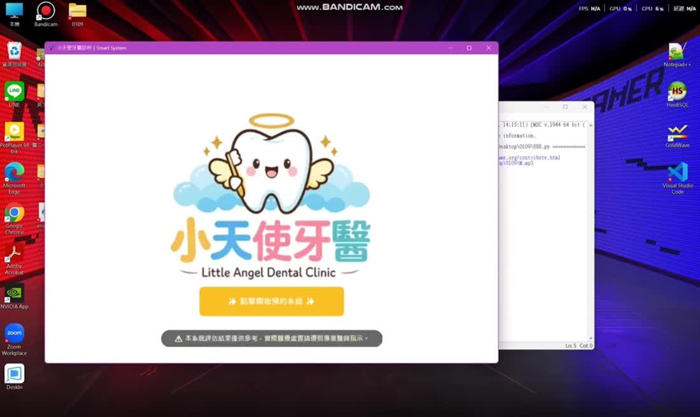
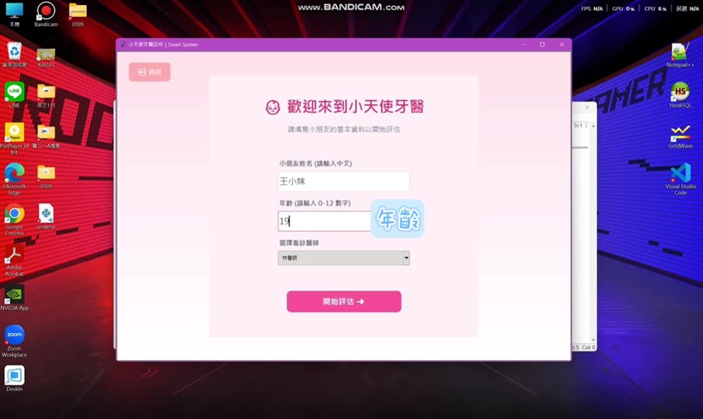
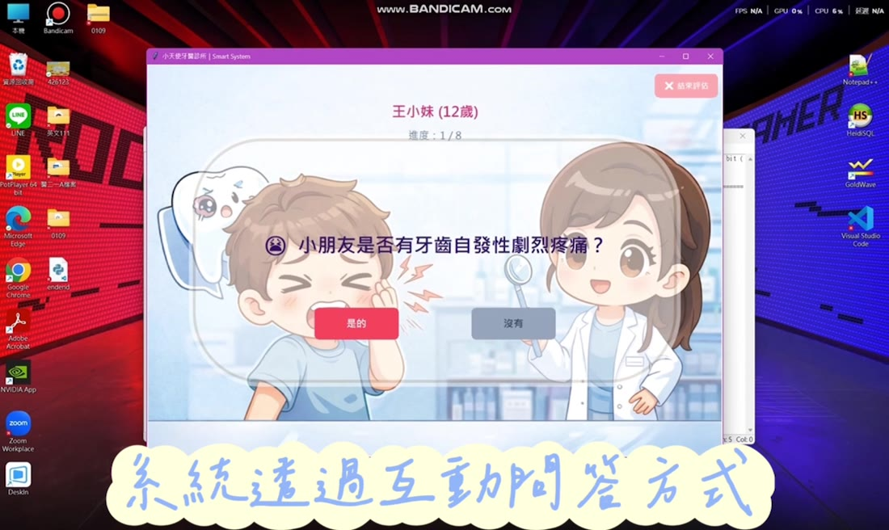
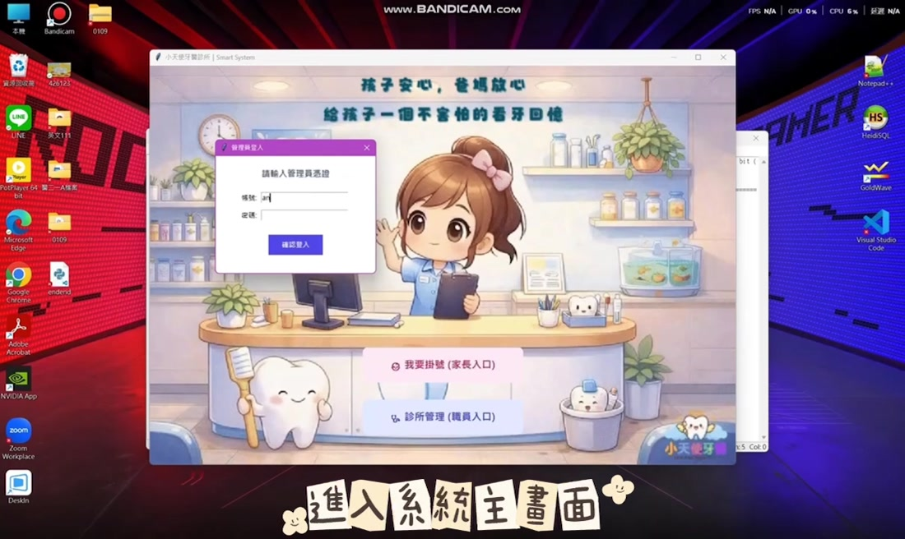
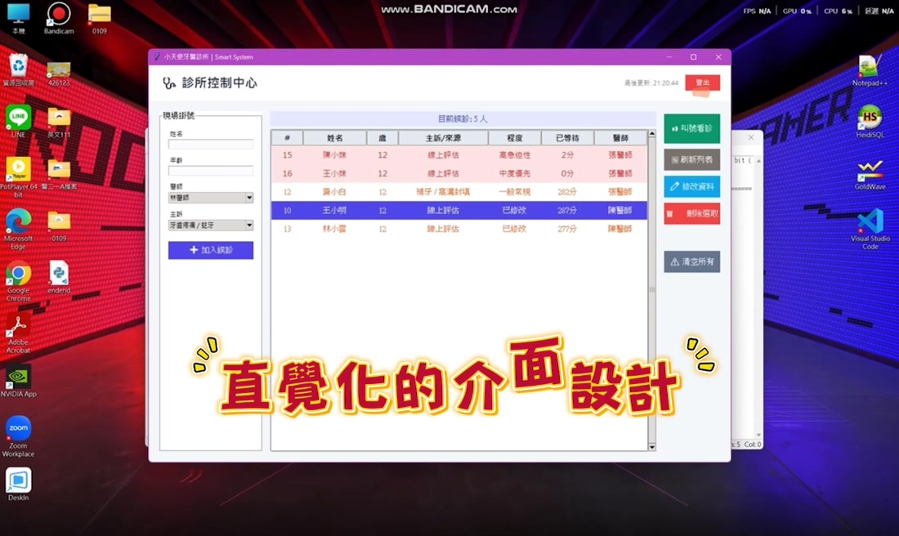
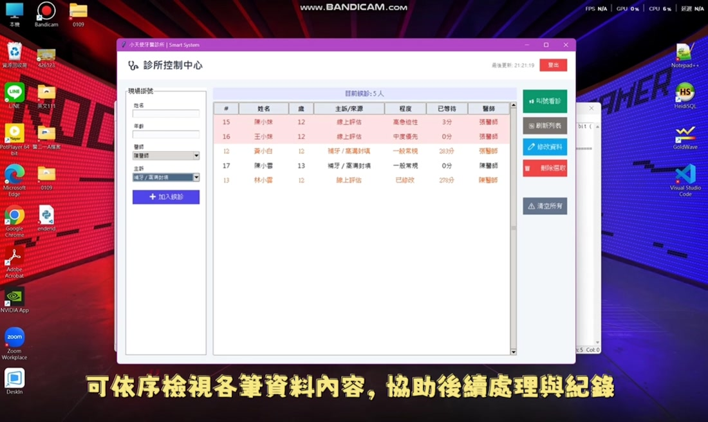

01 / ABOUT
作品介紹
醫護情境之基礎程式設計與應用
第六組期末專題｜系統由本人獨立開發
第六組期末專題｜系統由本人獨立開發
這是「醫護情境之基礎程式設計與應用」課程的分組期末專題。小組共同完成主題報告，而系統的介面規劃、程式撰寫、功能串接及測試，則由我獨立負責。作品以模擬牙醫診所為情境，整合口腔健康問答、預約操作與診所管理功能。
從功能構想到實際操作，我依照使用者的使用順序安排頁面，並在測試過程中持續修改介面與程式，讓整體流程更完整、容易操作。
02 / MY ROLE
個人負責項目
這項作品雖然以小組專題形式呈現，但系統開發部分由我獨立完成。
01
介面與操作流程設計
規劃使用者端及診所端畫面，安排功能與操作順序。
02
程式撰寫與功能整合
實作互動問答、預約及管理等功能，串接各個操作頁面。
03
系統測試與調整
逐步檢查操作流程，修正執行時遇到的問題並改善介面。
03 / FEATURES
系統功能
以實際使用流程為出發點，整合使用者端與診所端的模擬操作。
01
基本資料填寫
建立使用者資料，開始後續的問答與預約流程。
02
口腔健康問答
透過互動題目，呈現口腔健康評估情境。
03
預約操作
模擬看診前的預約安排。
04
診所後台
提供工作人員使用的管理介面。
05
資料查詢
透過列表整理預約與相關紀錄。
06
流程整合
串接前台操作與後台管理的模擬流程。
04 / PROJECT VIDEO
成果展示影片
透過操作影片，呈現我實際開發的系統功能與使用流程。
按下播放鍵即可觀看；也可以調整音量、進度與全螢幕。影片長度約 1 分 20 秒。
05 / GALLERY
實際操作畫面
以下圖片擷取自成果影片，點擊可放大檢視。





06 / REFLECTION
製作過程與收穫
這次最大的挑戰，是要自己把想法一步步做成能操作的系統。從介面安排、功能撰寫到測試修改，過程中常常需要反覆檢查，找出問題再調整。完成後也讓我更清楚，程式不只是能執行就好，畫面是否容易理解、操作是否順暢，同樣重要。這次經驗讓我對獨立開發一套系統更有信心。
本作品為課程情境模擬，並非正式醫療診斷或實際診所預約服務。